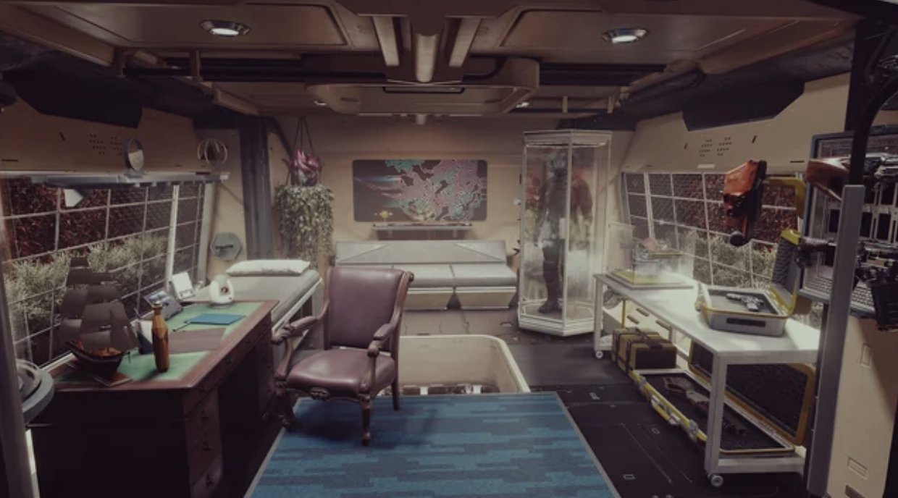
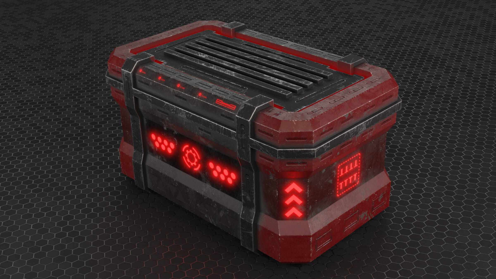
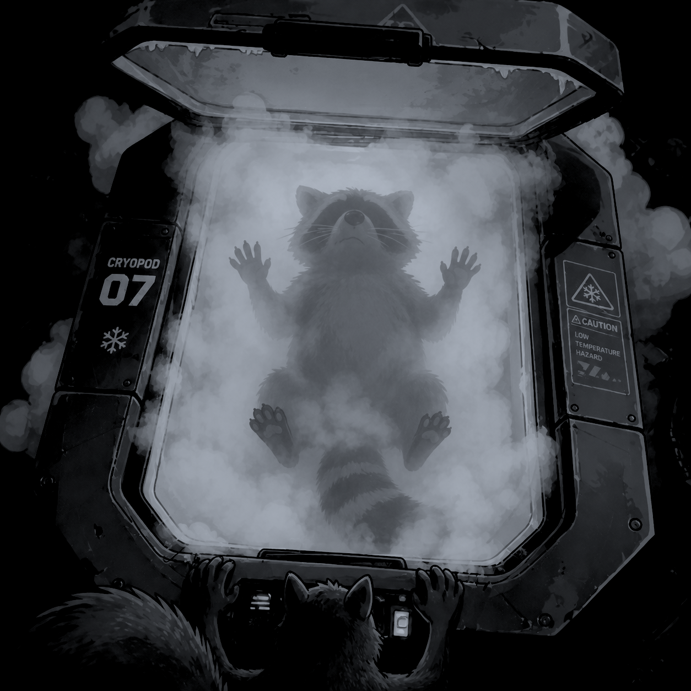

Cosmo: That’s enough Wiki pages for today. Zeta, set the room lights to dim.
Lowering light brightness to 30%.
Cosmo: God, this couch is so comfortable. Why couldn’t they add one of these to the cryo chamber?
Size restrictions would mean the subject would no longer fit in the vacuum-sealed pod.
Cosmo: I know, Zeta! I heard you the other five times you told me the past week. I thought the humans were terrible conversation partners but you take the cake. Is it really so hard to find some friends here? Something without a smooth alloy brain or with a voice like Kramer?
Is this a request, Cosmo?
Cosmo: Sure, fine. Do your best to find me a four-legged friend in the depths of black space, Zeta! And make it snappy!
Assessing other animal subject pods.
Subject 100: Canis familiaris. Status: Deceased.
Cosmo: So much for man’s best friend, eh?
Are you finished hearing the list?
Cosmo: No! You bucket o’ bolts. Continue.
Subject 101: Puma concolor. Status: Deceased.
Subject 102: Felis catus. Status: Deceased.
Subject 103: Canis latrans. Status: Deceased.
Cosmo: What were those last three subjects’ simplified names?
A puma, domestic cat, and a coyote.
Cosmo: Yikes. Maybe it was for the best.
Subject 105: Thamnophis sirtalis. Status: Deceased.
Subject 106: Rana temporaria. Status: Deceased.
Subject 107: Castor canadensis. Status: Deceased.
Subject 108: Procyon lotor. Status: Asleep.
Cosmo: Huh. Stop. What animal is this?
The common raccoon.
Cosmo: *Chitter*
Cosmo: Now why didn’t they tell me about this?
Cosmo: Where is it now, Zeta?
Its pod is within the Captain’s quarters.
Cosmo: Shit. That one’s locked. Can you jimmy it open, dear Zeta?
It requires top-level clearance by a commanding officer of the ship. Your pawprint can only access engineer-tiered rooms.
Cosmo: Of course. I only have Cam and Sidney’s level of access. Maybe…
Cosmo: Zeta, where is the captain right now?
The Captain’s pod is currently sealed within the quarters. Accessing him would require equal levels of clearance.
Cosmo: That’s not the plan, Zeta. Do you still have that robot arm that you pricked me with earlier? When you wanted me to eat more slop?
Yes, the MXQ-5690 multi-use arm is still in service.
Cosmo: Take it in front of the Captain’s door.
Transitioning arm to mobility mode…
Cosmo: Nice! It has wheels! Bless the lad who added that.
Cosmo: Now, listen close Zeta… Are you listening?
I am an onboard AI installed into every computer on the ship. I hear everything.
Cosmo: Great, you creepy box of conductors. There is a piece of vital information inside the Captain’s quarters I need to reach. I wonder how I will get it before the ship is unfortunately destroyed because of it…
Analytics show that there are no vital resources in the Captain’s quarters.
Cosmo: Alright, so there’s a person in need of saving in there…
Captain John White is currently deceased. His body will provide no use to the mission.
Cosmo: FUCK! Damn this robot’s programming.
Cosmo: So I’m an ecoterrorist that just boarded the ship and I’m going to destroy all the control panel pieces if the Captain’s door doesn’t open.
Inherent directive triggered: ‘We do not negotiate with terrorists. Fuck you.’
Cosmo: *Chitter*
Cosmo: You know I hate you, Zeta. Let me get what I want!
Cosmo: Hmmmm…
Cosmo: Ah!
Cosmo: Zeta. Are there any updates on the ship that are necessary… you know… now that we have internet?
There are five updates required.
Cosmo: Can you list out each one?
There is a vital update for the solar sails computer. There are two vital updates for Zeta Command. There is an optional update for command panel usage. There is an optional update for supported languages on panel usage.
Cosmo: What are the two Zeta updates? What would happen if they begin while we’re flying?
Authorization logic will be deactivated and will enter an engineer developer-state.
Cosmo: Great! Process only one!
Zeta update confirmed. Be warned, all authorization will become null and every panel will have access to the master commands. Use in a safe environment and with backup in-case of a system lockout. Proceeding…
Engineer-mode activated.
Update in progress…
Cosmo: Now’s my chance!
BEEEEEP. Opening captain’s quarters.
Cosmo: Where are you, you trash bandit?

Cosmo: Maybe under the desk?
Cosmo: Damn! Not there.
Cosmo: By the bed?
Update 50% complete.
Cosmo: Yea, yea, I get it.
Cosmo: NOT THERE?
Cosmo: Okay, it’s gotta be by the workstation. People always keep weird shit at their desks.

Cosmo: Eureka!
Cosmo: Now to get this damn thing open…
WARNING: SUBJECT IS SEALED. OPENING POD WILL RESULT IN EXTREME DEPRESSURIZATION.
Cosmo: Can’t be that bad! It’s a cryo pod!
KZZRT! PSSST!!
Cosmo: Ow!! Colder than frozen hell!
Update 75% complete.
POD OPENING… PLEASE STAND BACK.

Cosmo: Hello, you! Good morning!
Update 100% complete.
BZZZT!
Engineer-mode disabled. All doors given authorization will need to be reauthorized.
Cosmo: Shit.
Cosmo: …
Cosmo: Guess it’s just you and me. Wake up soon, I got a whole galaxy to show ya.
Continue →